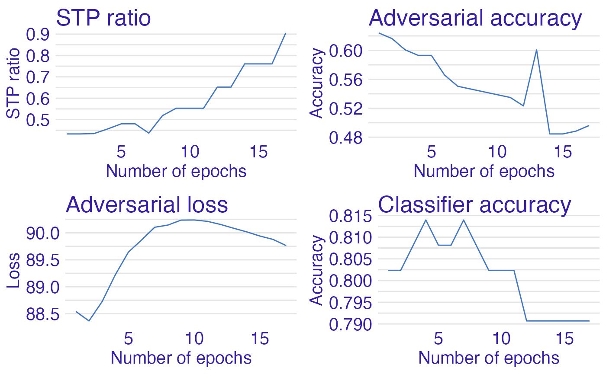

FairPAN Tutorial
Hubert Ruczyński
Tutorial.RmdFairPAN
In this tutorial you will get to know when, why and how to use FairPAN and you will also learn about how this model works from theoretical side. FairPAN, which stands for Fair Predictive Adversarial Network, is a tool not only for creating fair predictive adversarial networks, but also for monitoring the training process and visualizing its outcomes. This package is really flexible, because the user can not only provide its own neural network models, but also create them with our functions.
How does it work?
Introduction to Fairness
Consider the idea of the algorithm that has to predict whether giving credit to a person is risky or not. It is learning on real data of giving credits which were biased against females (historical fact). In that case, the model learns this bias, which is not only included in the simple sex variable but also is hidden inside other variables. Fairness enables us to detect such bias and handles a few methods to fight it. To learn more, I recommend the article ‘Fairmodels: A Flexible Tool For Bias Detection, Visualization, And Mitigation’ by Jakub Wisniewski and Przemysław Biecek.
Introduction to GANs
Generative Adversarial Networks are two neural networks that learn together. The Generator has to generate new samples that are indistinguishable from original data and the adversarial has to distinguish if the observation is original or generated. The generator is punished whenever the adversarial makes the correct prediction. After such process generator eventually learns how to make indistinguishable predictions and adversaries’ accuracy drops up to 50% when a model cannot distinguish the two classes. The idea of GANs was proposed in Generative Adversarial Nets, Ian Goodfellow.
FairPAN
FairPANs are the solution to bring fairness into neural networks. We mimic the GANs by subsetting generator with classifier (predictor) and adversarial has to predict the sensitive value (such as sex, race, etc) from the output of the predictor. This process eventually leads the classifier to make predictions with indistinguishable sensitive values. The idea comes from blogs: Towards fairness in ML with adversarial networks, Stijn Tonk and Fairness in Machine Learning with PyTorch, Henk Griffoen however, our implementation in R offers slightly different solutions. And the exact idea behind using GANs for Fairness is described in Achieving Fairness through Adversarial Learning: an Application to Recidivism Prediction, Christina Wadsworth, Francesca Vera, Chris Piech.

The diagram above represents the architecture of our model and is strongly inspired by aforementioned blogs
Custom Loss Function
The crucial part of this model is the metric we use to engage the two models into a zero-sum game. This is captured by the following objective function:
So, it learns to minimize its prediction losses while maximizing that of the adversarial (due to lambda being positive and minimizing a negated loss is the same as maximizing it). The objective during the game is simpler for the adversarial: predict sex based on the income level predictions of the classifier. This is captured in the following objective function:

The adversarial does not care about the prediction accuracy of the classifier. It is only concerned with minimizing its prediction losses. Firstly we pretrain classifier and adversarial. Later we begin the proper PAN training with both networks: we train the adversarial, provide its loss to the classifier, and after that, we train the classifier. This method shall lead us to fair predictions of the FairPAN model.
Why?
Regular mitigation techniques tend to worsen performance of the classifier a lot by decreasing accuracy for example, whereas FairPAN has no such drawback and worsening of the performance is really small. Moreover, our package is very flexible because it enables to provide your own neural networks, but also to create one with our functions. The outcomes are also created with the usage of DALEX and fairmodels, so one can use their methods and visualizations. Additionally the workflow of the package is really simple and clean, because of multiple features available for user, such as preprocess function.
Data
The dataset used in our tutorial is called adult. It contains 15 columns with both numerical and categorical data about citizens of USA. Our target here is a salary column. As sensitive variables we can perceive sex and race however we will focus only on sex.
library(fairpan)## Loading required package: torch
library(fairmodels)
data("adult")
head(adult)## salary age workclass fnlwgt education education_num marital_status
## 1 <=50K 39 State-gov 77516 Bachelors 13 Never-married
## 2 <=50K 50 Self-emp-not-inc 83311 Bachelors 13 Married-civ-spouse
## 3 <=50K 38 Private 215646 HS-grad 9 Divorced
## 4 <=50K 53 Private 234721 11th 7 Married-civ-spouse
## 5 <=50K 28 Private 338409 Bachelors 13 Married-civ-spouse
## 6 <=50K 37 Private 284582 Masters 14 Married-civ-spouse
## occupation relationship race sex capital_gain capital_loss
## 1 Adm-clerical Not-in-family White Male 2174 0
## 2 Exec-managerial Husband White Male 0 0
## 3 Handlers-cleaners Not-in-family White Male 0 0
## 4 Handlers-cleaners Husband Black Male 0 0
## 5 Prof-specialty Wife Black Female 0 0
## 6 Exec-managerial Wife White Female 0 0
## hours_per_week native_country
## 1 40 United-States
## 2 13 United-States
## 3 40 United-States
## 4 40 United-States
## 5 40 Cuba
## 6 40 United-StatesWorkflow
Preprocessing
At the beginning we have to preprocess our dataset so we can train a neural network on it and divide it into train and test subsets. One can do it on your own, however we will use built in function called preprocess which will create 16 objects which are needed for other features.
To use this function we have to provide a dataset with categorical columns provided as factors. Then we define that salary is our target and sex is a sensitive variable with privileged level Male and discriminated Female. As we noticed before, race could also be considered as a sensitive variable so we want to remove it from our learning dataset too. In the end we sample a small part of the dataset for our process to save our time in this example and define proportions of train, test and validation subsets. We also set seed for reproduction.
Inside, the function encodes the categorical columns as integers based on their factor levels. After that all variables are rescaled to ensure better learning process. Moreover to ensure that adversarial model works properly, we also balance a dataset to have the same number of privileged and discriminated records.
data <- preprocess( data = adult, # dataset
target_name = "salary", # name of target column
sensitive_name = "sex", # name of sensitive column
privileged = "Male", # level of privileged class
discriminated = "Female", # level of discriminated class
drop_also = c("race"), # columns to drop (perhaps
# other sensitive variable)
sample = 0.02, # sample size from dataset
train_size = 0.6, # size of train set
test_size = 0.4, # size of test set
validation_size = 0, # size of validation set
seed = 7 # seed for reproduction.
)
head(data$train_x,2)## [,1] [,2] [,3] [,4] [,5] [,6] [,7]
## [1,] -0.3268045 0.1818740 -0.66422374 -0.3411161 1.24547 -0.4622176 -0.442901
## [2,] 2.2741900 0.8282032 -0.05688447 -0.3411161 1.24547 1.4187309 -0.442901
## [,8] [,9] [,10] [,11] [,12]
## [1,] -1.0684260 -0.1091987 -0.2235767 0.48039857 0.2780602
## [2,] -0.4861406 -0.1091987 -0.2235767 0.06808044 0.2780602
head(data$train_y,2)## [1] 1 1
head(data$sensitive_train,2)## [1] 2 2
head(data$test_x,2)## [,1] [,2] [,3] [,4] [,5] [,6] [,7]
## [1,] -1.3383024 -1.110784 -0.1091827 1.1762624 -0.0216091 0.7917481 0.4460018
## [2,] -0.9048033 0.181874 -0.2782588 0.1646767 -0.4439688 -0.4622176 -1.1095780
## [,8] [,9] [,10] [,11] [,12]
## [1,] 0.6784302 -0.1091987 -0.2235767 -0.3442377 0.2780602
## [2,] 1.8430009 -0.1091987 -0.2235767 0.8927167 0.2780602
head(data$test_y,2)## [1] 1 2
head(data$sensitive_test,2)## [1] 1 1
head(data$data_scaled_test,2)## [,1] [,2] [,3] [,4] [,5] [,6] [,7]
## [1,] -1.3383024 -1.110784 -0.1091827 1.1762624 -0.0216091 0.7917481 0.4460018
## [2,] -0.9048033 0.181874 -0.2782588 0.1646767 -0.4439688 -0.4622176 -1.1095780
## [,8] [,9] [,10] [,11] [,12]
## [1,] 0.6784302 -0.1091987 -0.2235767 -0.3442377 0.2780602
## [2,] 1.8430009 -0.1091987 -0.2235767 0.8927167 0.2780602
head(data$data_test,2)## salary age workclass fnlwgt education education_num marital_status
## 23812 <=50K 19 Local-gov 176831 Some-college 10 Never-married
## 10859 >50K 25 Private 158662 HS-grad 9 Married-civ-spouse
## occupation relationship race sex capital_gain capital_loss
## 23812 Other-service Own-child Black Female 0 0
## 10859 Adm-clerical Wife White Female 0 0
## hours_per_week native_country
## 23812 35 United-States
## 10859 50 United-States
head(data$protected_test,2)## [1] Female Female
## Levels: Female MaleWe’ve decided to show the most important objects created by preprocess above.
Our next step is setting a computational device dev, which might be GPU with CUDA or cpu if we don’t have CUDA installed. Even more importantly we create a dataset_loader object which stores data as tensor for our neural network in 4 objects. First two of them are torch datasets for storing all the tensors and the other two are torch dataloaders which store tensors in batches described by batch_size.
dev <- "cpu"
dsl <- dataset_loader(train_x = data$train_x,
train_y = data$train_y,
test_x = data$test_x,
test_y = data$test_y,
batch_size = 5,
dev = dev
)
print(dsl$train_dl$.iter()$.next())## $x_cont
## torch_tensor
## Columns 1 to 10-0.3268 0.1819 -0.6642 -0.3411 1.2455 -0.4622 -0.4429 -1.0684 -0.1092 -0.2236
## 2.2742 0.8282 -0.0569 -0.3411 1.2455 1.4187 -0.4429 -0.4861 -0.1092 -0.2236
## -0.3991 0.1819 1.2816 -0.3411 1.2455 0.7917 0.4460 1.2607 -0.1092 -0.2236
## 0.6124 -1.7571 0.1718 -0.3411 1.2455 -0.4622 -0.4429 -1.0684 0.9980 -0.2236
## 0.9014 0.1819 -0.4723 0.1647 -0.4440 -0.4622 1.7794 -1.0684 -0.1092 -0.2236
##
## Columns 11 to 12 0.4804 0.2781
## 0.0681 0.2781
## 0.0681 0.2781
## 0.0681 0.2781
## 1.7174 0.2781
## [ CPUFloatType{5,12} ]
##
## $y
## torch_tensor
## 1
## 1
## 1
## 2
## 2
## [ CPULongType{5} ]In the end of preprocessing you can see how the single batch of train data loader looks like.
Model creation and pretrain
Finally we are ready to create and pretrain both adversarial and classifier models. FairPAN provides multiple options in this case, because one can not only create and pretrain both models with our interface, but also provide their own neural network models (clf_model and adv_model). The classifier model can be also pretrained, but then clf_optimizer from that training must be provided and trained changed to TRUE.
In our first example we will focus on pretraining both models created by the pretrain function. To do that you don’t have to provide first four variables, because they are set like that on default. One has to provide data in next four variables and then, the other two describe inner dataset_loader for adversarial network. Next block describes the structure of our models. Neural architecture is provided as a simple vector where, for example, c(32,16,8) describes a network with 3 layers with 32, 16 and 8 neurons. This layers are connected with nn_linear and during forward pass, inner layers have nnf_relu with nnf_softmax in the end. User can also define dimension for softmax, however we advice not to do so, because other approaches are not sufficiently tested. In the end one can also provide learning rates and numbers of epochs for both models. In the end we have to provide a dataset_loader with device and choose whether we want to monitor more metrics and print them out. As a result we will obtain pretrained neural network models (classifier and adversarial) and optimizers for those two models.
models <- pretrain(clf_model = NULL, # classifier model
adv_model = NULL, # adversarial model
clf_optimizer = NULL, # classifiers optimizer
trained = FALSE, # indicates whether provided classifier is
# trained
train_x = data$train_x, # train predictors
train_y = data$train_y, # train target
sensitive_train = data$sensitive_train, # train sensitives
sensitive_test = data$sensitive_test, # test sensitives
batch_size = 5, # inner dataset_loader batch size
partition = 0.6, # partition for inner adversaries
# dataset_loader preparation
neurons_clf = c(32, 32, 32), # classifiers neural architecture
neurons_adv = c(32, 32, 32), # adversaries neural architecture
dimension_clf = 2, # dimension for classifier (always set 2)
dimension_adv = 1, # dimension for adversarial (always set 1)
learning_rate_clf = 0.001, # learning rate of classifier
learning_rate_adv = 0.001, # learning rate of adversarial
n_ep_preclf = 10, # number of epochs for classifier pretrain
n_ep_preadv = 10, # number of epochs for adversarial pretrain
dsl = dsl, # dataset_loader
dev = dev, # computational device
verbose = TRUE, # if TRUE prints metrics
monitor = TRUE # if TRUE aquires more data ( also to print)
)## Preclassifier at epoch 1: training loss: 0.633, validation: 0.579, accuracy: 0.785, STPR: NaN
## Preclassifier at epoch 2: training loss: 0.554, validation: 0.523, accuracy: 0.785, STPR: NaN
## Preclassifier at epoch 3: training loss: 0.530, validation: 0.513, accuracy: 0.785, STPR: NaN
## Preclassifier at epoch 4: training loss: 0.517, validation: 0.503, accuracy: 0.785, STPR: NaN
## Preclassifier at epoch 5: training loss: 0.504, validation: 0.496, accuracy: 0.802, STPR: 0.000
## Preclassifier at epoch 6: training loss: 0.487, validation: 0.491, accuracy: 0.808, STPR: 0.277
## Preclassifier at epoch 7: training loss: 0.469, validation: 0.491, accuracy: 0.808, STPR: 0.325
## Preclassifier at epoch 8: training loss: 0.454, validation: 0.489, accuracy: 0.808, STPR: 0.397
## Preclassifier at epoch 9: training loss: 0.442, validation: 0.491, accuracy: 0.808, STPR: 0.397
## Preclassifier at epoch 10: training loss: 0.432, validation: 0.491, accuracy: 0.814, STPR: 0.415
## Preadversary at epoch 1: training loss: 0.693, validation: 0.692, accuracy: 0.644
## Preadversary at epoch 2: training loss: 0.692, validation: 0.692, accuracy: 0.644
## Preadversary at epoch 3: training loss: 0.690, validation: 0.690, accuracy: 0.644
## Preadversary at epoch 4: training loss: 0.687, validation: 0.688, accuracy: 0.654
## Preadversary at epoch 5: training loss: 0.684, validation: 0.686, accuracy: 0.635
## Preadversary at epoch 6: training loss: 0.682, validation: 0.685, accuracy: 0.635
## Preadversary at epoch 7: training loss: 0.680, validation: 0.685, accuracy: 0.635
## Preadversary at epoch 8: training loss: 0.679, validation: 0.685, accuracy: 0.644
## Preadversary at epoch 9: training loss: 0.678, validation: 0.685, accuracy: 0.654
## Preadversary at epoch 10: training loss: 0.677, validation: 0.685, accuracy: 0.644As we’ve mentioned before, we can also provide our own pretrained model to the pretrain function, just like in the example below. Note that in this particular case we create the same classifier as in the previous example and the only difference is that we do it outside the pretrain function. create_model and pretrain_net are the methods which we also use under the pretrain, but the user is also able to call them and their parameters are similar to those in the pretrain. create_model returns the neural network architecture, whereas pretrain_net proceeds with its training and returns losses and optimizer from the learning process.
As you can see, in pretrain we provide clf_model,clf_optimizer and change trained to TRUE as stated before.
clf <- create_model(train_x = data$train_x, # train predictors
train_y = data$train_y, # train target
neurons = c(32,32,32), # models neural architecture
dimensions = 2 # dimension for model (always set 2 for
# classifier 1 for adversary)
)
opt <- pretrain_net(n_epochs = 10, # number of epochs for model pretrain
model = clf, # neural network model
dsl = dsl, # dataset_loader
model_type = 1, # model type (1 means precalssifer)
learning_rate = 0.001, # learning rate of classifier
sensitive_test = data$sensitive_test, # test sensitives
dev = dev, # computational device
verbose = TRUE, # if TRUE prints metrics
monitor = TRUE # if TRUE aquires more data ( also to print)
)## Preclassifier at epoch 1: training loss: 0.633, validation: 0.579, accuracy: 0.785, STPR: NaN
## Preclassifier at epoch 2: training loss: 0.554, validation: 0.523, accuracy: 0.785, STPR: NaN
## Preclassifier at epoch 3: training loss: 0.530, validation: 0.513, accuracy: 0.785, STPR: NaN
## Preclassifier at epoch 4: training loss: 0.517, validation: 0.503, accuracy: 0.785, STPR: NaN
## Preclassifier at epoch 5: training loss: 0.504, validation: 0.496, accuracy: 0.802, STPR: 0.000
## Preclassifier at epoch 6: training loss: 0.487, validation: 0.491, accuracy: 0.808, STPR: 0.277
## Preclassifier at epoch 7: training loss: 0.469, validation: 0.491, accuracy: 0.808, STPR: 0.325
## Preclassifier at epoch 8: training loss: 0.454, validation: 0.489, accuracy: 0.808, STPR: 0.397
## Preclassifier at epoch 9: training loss: 0.442, validation: 0.491, accuracy: 0.808, STPR: 0.397
## Preclassifier at epoch 10: training loss: 0.432, validation: 0.491, accuracy: 0.814, STPR: 0.415
print(opt$optimizer)## <optim_adam>
## Inherits from: <torch_Optimizer>
## Public:
## add_param_group: function (param_group)
## clone: function (deep = FALSE)
## defaults: list
## initialize: function (params, lr = 0.001, betas = c(0.9, 0.999), eps = 1e-08,
## load_state_dict: function (state_dict)
## param_groups: list
## state: State, R6
## state_dict: function ()
## step: function (closure = NULL)
## zero_grad: function ()
## Private:
## step_helper: function (closure, loop_fun)
clf_optimizer <- opt$optimizer
models <- pretrain(clf_model = clf, # classifier model
adv_model = NULL, # adversarial model
clf_optimizer = clf_optimizer, # classifiers optimizer
trained = TRUE, # indicates whether provided classifier is
# trained
train_x = data$train_x, # train predictors
train_y = data$train_y, # train target
sensitive_train = data$sensitive_train, # train sensitives
sensitive_test = data$sensitive_test, # test sensitives
batch_size = 5, # inner dataset_loader batch size
partition = 0.6, # partition for inner adversaries
# dataset_loader preparation
neurons_clf = c(32, 32, 32), # classifiers neural architecture
neurons_adv = c(32, 32, 32), # adversaries neural architecture
dimension_clf = 2, # dimension for classifier (always set 2)
dimension_adv = 1, # dimension for adversarial (always set 1)
learning_rate_clf = 0.001, # learning rate of classifier
learning_rate_adv = 0.001, # learning rate of adversarial
n_ep_preclf = 5, # number of epochs for classifier pretrain
n_ep_preadv = 10, # number of epochs for adversarial pretrain
dsl = dsl, # dataset_loader
dev = dev, # computational device
verbose = TRUE, # if TRUE prints metrics
monitor = TRUE # if TRUE aquires more data ( also to print)
)## Preadversary at epoch 1: training loss: 0.693, validation: 0.692, accuracy: 0.644
## Preadversary at epoch 2: training loss: 0.692, validation: 0.692, accuracy: 0.644
## Preadversary at epoch 3: training loss: 0.690, validation: 0.690, accuracy: 0.644
## Preadversary at epoch 4: training loss: 0.687, validation: 0.688, accuracy: 0.654
## Preadversary at epoch 5: training loss: 0.684, validation: 0.686, accuracy: 0.635
## Preadversary at epoch 6: training loss: 0.682, validation: 0.685, accuracy: 0.635
## Preadversary at epoch 7: training loss: 0.680, validation: 0.685, accuracy: 0.635
## Preadversary at epoch 8: training loss: 0.679, validation: 0.685, accuracy: 0.644
## Preadversary at epoch 9: training loss: 0.678, validation: 0.685, accuracy: 0.654
## Preadversary at epoch 10: training loss: 0.677, validation: 0.685, accuracy: 0.644In the end we want to create an explainer for our classification model, but we will say more about it later.
exp_clf <- explain_pan(y = data$test_y, # test target
model = models$clf_model, # classifier model
label = "Classifier", # classifiers name
original_data = data$data_test, # original data for test
data = data$data_scaled_test, # scaled numeric data for test
batch_size = 5, # batch_size used in dataset_loader
dev = dev, # computational device
verbose = TRUE # if TRUE prints monitor info
)## Preparation of a new explainer is initiated
## -> model label : Classifier
## -> data : 172 rows 15 cols
## -> target variable : 172 values
## -> predict function : custom_predict
## -> predicted values : No value for predict function target column. ( [33m default [39m )
## -> model_info : package Model of class: net package unrecognized , ver. Unknown , task regression ( [33m default [39m )
## -> model_info : type set to classification
## -> predicted values : numerical, min = 4.826793e-12 , mean = 0.2093583 , max = 0.9950494
## -> residual function : difference between y and yhat ( [33m default [39m )
## -> residuals : numerical, min = -0.9874027 , mean = 0.005757974 , max = 0.9999998
## [32m A new explainer has been created! [39mFairtrain
Finally we’ve reached the most important part of this package which is the fair_train function. This function enables us to conduct a fair training which optimizes Statistical Parity Ratio, thus leading to similar distributions of privileged and discriminated groups. As a short reminder, this method is based on a mutual training of the classifier and adversarial, where classifier learns to deceive the adversarial, so in the end it cannot predict the correct label. As we use previous models we need to provide them with correct optimizers. Moreover in the loss function equation we see a lambda parameter which we also have to provide. The intuition behind it states that the bigger the lambda is the fairer the training is, but traditional performance, like accuracy worsens faster. At this point you should be familiar with rest of the parameters, however monitor here collects much more training data (STP ratio, adversary accuracy, adversary loss and classifier accuracy) which can be used to monitor the training process. On the other hand calculating this metrics takes lots of time so turning monitor off is good when you’re sure that your model works properly. This function returns NULL if monitor is off and aforementioned metrics if it is on.
monitor <- fair_train( n_ep_pan = 17, # number of epochs for pan training
dsl = dsl, # dataset_loader
clf_model = models$clf_model, # classifier model
adv_model = models$adv_model, # adv model
clf_optimizer = models$clf_optimizer, # classifiers optimizer
adv_optimizer = models$adv_optimizer, # adversaries optimizer
dev = dev, # computational device
sensitive_train = data$sensitive_train, # train sensitives
sensitive_test = data$sensitive_test, # test sensitives
batch_size = 5, # inner dataset_loader batch size
learning_rate_adv = 0.001, # learning rate of adversarial
learning_rate_clf = 0.001, # learning rate of classifier
lambda = 130, # train controlling parameter (the
# bigger the better STPR results)
verbose = TRUE, # if TRUE prints metrics
monitor = TRUE # if TRUE training collects 4 metrics
# throughout the epochs
)## PAN epoch 1
## Classifier at epoch 1:training loss: -99.599, accuracy: 0.802
## Adversary at epoch 1: training loss: 88.542,accuracy: 0.624, STPR: 0.433
## PAN epoch 2
## Classifier at epoch 2:training loss: -74.199, accuracy: 0.802
## Adversary at epoch 2: training loss: 88.366,accuracy: 0.616, STPR: 0.433
## PAN epoch 3
## Classifier at epoch 3:training loss: -71.105, accuracy: 0.808
## Adversary at epoch 3: training loss: 88.725,accuracy: 0.601, STPR: 0.435
## PAN epoch 4
## Classifier at epoch 4:training loss: -86.280, accuracy: 0.814
## Adversary at epoch 4: training loss: 89.221,accuracy: 0.593, STPR: 0.456
## PAN epoch 5
## Classifier at epoch 5:training loss: -91.172, accuracy: 0.808
## Adversary at epoch 5: training loss: 89.643,accuracy: 0.593, STPR: 0.480
## PAN epoch 6
## Classifier at epoch 6:training loss: -94.640, accuracy: 0.808
## Adversary at epoch 6: training loss: 89.867,accuracy: 0.566, STPR: 0.480
## PAN epoch 7
## Classifier at epoch 7:training loss: -90.038, accuracy: 0.814
## Adversary at epoch 7: training loss: 90.103,accuracy: 0.550, STPR: 0.437
## PAN epoch 8
## Classifier at epoch 8:training loss: -84.004, accuracy: 0.808
## Adversary at epoch 8: training loss: 90.144,accuracy: 0.547, STPR: 0.519
## PAN epoch 9
## Classifier at epoch 9:training loss: -93.248, accuracy: 0.802
## Adversary at epoch 9: training loss: 90.235,accuracy: 0.543, STPR: 0.553
## PAN epoch 10
## Classifier at epoch 10:training loss: -89.786, accuracy: 0.802
## Adversary at epoch 10: training loss: 90.238,accuracy: 0.539, STPR: 0.553
## PAN epoch 11
## Classifier at epoch 11:training loss: -90.503, accuracy: 0.802
## Adversary at epoch 11: training loss: 90.213,accuracy: 0.535, STPR: 0.553
## PAN epoch 12
## Classifier at epoch 12:training loss: -90.106, accuracy: 0.791
## Adversary at epoch 12: training loss: 90.156,accuracy: 0.523, STPR: 0.652
## PAN epoch 13
## Classifier at epoch 13:training loss: -89.872, accuracy: 0.791
## Adversary at epoch 13: training loss: 90.085,accuracy: 0.601, STPR: 0.652
## PAN epoch 14
## Classifier at epoch 14:training loss: -89.116, accuracy: 0.791
## Adversary at epoch 14: training loss: 90.018,accuracy: 0.484, STPR: 0.761
## PAN epoch 15
## Classifier at epoch 15:training loss: -92.320, accuracy: 0.791
## Adversary at epoch 15: training loss: 89.941,accuracy: 0.484, STPR: 0.761
## PAN epoch 16
## Classifier at epoch 16:training loss: -89.222, accuracy: 0.791
## Adversary at epoch 16: training loss: 89.878,accuracy: 0.488, STPR: 0.761
## PAN epoch 17
## Classifier at epoch 17:training loss: -89.998, accuracy: 0.791
## Adversary at epoch 17: training loss: 89.763,accuracy: 0.496, STPR: 0.905
monitor## $STP
## [1] 0.4329325 0.4329325 0.4346505 0.4563830 0.4804031 0.4804031 0.4367301
## [8] 0.5186170 0.5531915 0.5531915 0.5531915 0.6519757 0.6519757 0.7606383
## [15] 0.7606383 0.7606383 0.9052224
##
## $adversary_acc
## [1] 0.6240310 0.6162791 0.6007752 0.5930233 0.5930233 0.5658915 0.5503876
## [8] 0.5465116 0.5426357 0.5387597 0.5348837 0.5232558 0.6007752 0.4844961
## [15] 0.4844961 0.4883721 0.4961240
##
## $classifier_acc
## [1] 0.8023256 0.8023256 0.8081395 0.8139535 0.8081395 0.8081395 0.8139535
## [8] 0.8081395 0.8023256 0.8023256 0.8023256 0.7906977 0.7906977 0.7906977
## [15] 0.7906977 0.7906977 0.7906977
##
## $adversary_losses
## [1] 88.54218 88.36598 88.72516 89.22082 89.64261 89.86734 90.10343 90.14378
## [9] 90.23547 90.23825 90.21337 90.15602 90.08535 90.01792 89.94072 89.87830
## [17] 89.76320Metrics and Visualizations
After the training process we’d like to visualize the final outcome and the monitor of metrics throughout learning. To achieve that we have to use monitor in fair_train and apply plot_monitor function to it. This function is especially convenient in the process of parameters tuning and model adjustments, because one can easily check if the model learns properly.
plot_monitor(STP = monitor$STP, # monitor for STP
adversary_acc = monitor$adversary_acc, # monitor for adversaries accuracy
adversary_losses = monitor$adversary_losses, # monitor for adversaries loss
classifier_acc = monitor$classifier_acc) # monitor for classifiers accuracy
As fairness is closely connected with XAI, we also propose an option to create an explainer for our neural network models with explain_pan which is DALEX::explain function with proper adjustments for neural network models.
exp_PAN <- explain_pan(y = data$test_y, # test target
model = models$clf_model, # classifier model
label = "PAN", # classifiers name
original_data = data$data_test, # original data for test
data = data$data_scaled_test, # scaled numeric data for test
batch_size = 5, # batch_size used in dataset_loader
dev = dev, # computational device
verbose = TRUE # if TRUE prints additional info
)## Preparation of a new explainer is initiated
## -> model label : PAN
## -> data : 172 rows 15 cols
## -> target variable : 172 values
## -> predict function : custom_predict
## -> predicted values : No value for predict function target column. ( [33m default [39m )
## -> model_info : package Model of class: net package unrecognized , ver. Unknown , task regression ( [33m default [39m )
## -> model_info : type set to classification
## -> predicted values : numerical, min = 2.696841e-14 , mean = 0.1481732 , max = 0.9959807
## -> residual function : difference between y and yhat ( [33m default [39m )
## -> residuals : numerical, min = -0.9854026 , mean = 0.06694311 , max = 1
## [32m A new explainer has been created! [39mAll functions that work on DALEX explainer object also applies to our explain_pan, but probably two most interesting ones are model_performance and fairmodels::fairness_check.
The first one proves useful when we want to see the performance of the model. We’d like to show you this functionality by comparing performance of PAN and ordinary classification model. As we can see below it is true that performance of PAN slightly diminished (but it’s only 1.2% on accuracy!), but the next plot will show us why it is okay for us.
DALEX::model_performance(exp_PAN)## Measures for: classification
## recall : 0.3243243
## precision : 0.5217391
## f1 : 0.4
## accuracy : 0.7906977
## auc : 0.8114114
##
## Residuals:
## 0% 10% 20% 30% 40%
## -9.854026e-01 -1.366224e-01 -3.940820e-03 -8.915482e-05 -4.210485e-06
## 50% 60% 70% 80% 90%
## -4.095541e-07 -3.830160e-08 -1.062288e-09 2.399297e-02 9.364332e-01
## 100%
## 1.000000e+00
DALEX::model_performance(exp_clf)## Measures for: classification
## recall : 0.5135135
## precision : 0.5757576
## f1 : 0.5428571
## accuracy : 0.8139535
## auc : 0.8266266
##
## Residuals:
## 0% 10% 20% 30% 40%
## -9.874027e-01 -3.375116e-01 -3.382319e-02 -9.803546e-04 -8.439770e-05
## 50% 60% 70% 80% 90%
## -9.038159e-06 -1.157365e-06 -3.813997e-08 1.248153e-02 5.808426e-01
## 100%
## 9.999998e-01Finally, with fairmodels::fairness_check used on explainers (exp_PAN, exp_clf) we can compare fairness metrics for both models. We can use this function on a single or many explainers, but we have to provide them after comma one by one and ensure that they have different labels. After creating fairness object (fobject) we can plot it with regular plot function.
fobject <- fairmodels::fairness_check(exp_PAN,exp_clf, # explainers given one by one
protected = data$protected_test, # protected column
privileged = "Male", # privileged class from protected
verbose = TRUE) # if TRUE prints additional info## Creating fairness classification object
## -> Privileged subgroup : character ([32m Ok [39m )
## -> Protected variable : factor ([32m Ok [39m )
## -> Cutoff values for explainers : 0.5 ( for all subgroups )
## -> Fairness objects : 0 objects
## -> Checking explainers : 2 in total ( [32m compatible [39m )
## -> Metric calculation : 12/12 metrics calculated for all models
## [32m Fairness object created succesfully [39m
plot(fobject)As we can see, Statistical Parity ratio dramatically increased and the model is almost fair according to this metric. On the other hand we see worsening of other metrics, like Equal Opportunity ratio, however it can be easily explained. During the fair_train process we make more TP (True Positives) and FP (False Positives) which directly changes the value of Equal opportunity ratio, so this sacrifice is unavoidable.